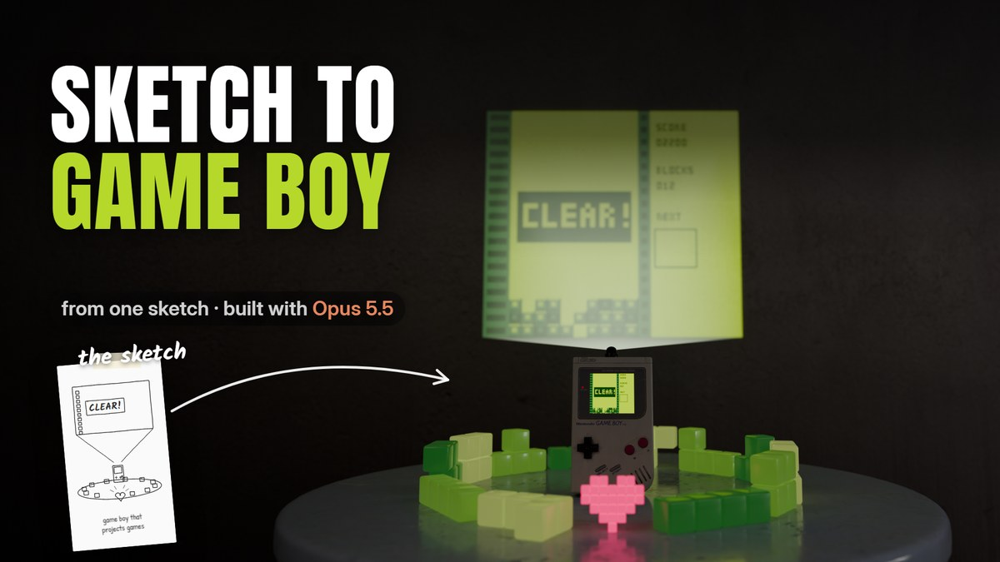

One guide per video: the shot list, the sketches, the tools and the prompts. If you commented a keyword on a reel, your guide is here.

A Game Boy whose cartridge is a projector. One sketch per shot, Claude Opus 5.5 and Blender.